The 22 problems from the 2026-10-28 check-up. "Before" is the last commit (37ba1cd) and "after" is the working tree. Both are played by the same test script on the same phone size.
21 fixed18 shown by a test on both copies3 checked in the code1 not doable here (APK)1 slip of mine caught and fixed
Serious
1
The phone's back button left the app, even mid-lesson
BeforeBack in a lesson went to the previous website (or closed the installed app), and the lesson was lost.
AfterBack takes one step inside the app:
in a lesson it asks «تبي توقف الدرس؟»;
a sheet or popup closes;
a screen with a back arrow goes back;
other tabs go to the path;
only the path itself lets the phone leave.
A running mock exam and a win screen stay put.
Back in a lesson: the app is gone (the test landed on about:blank)
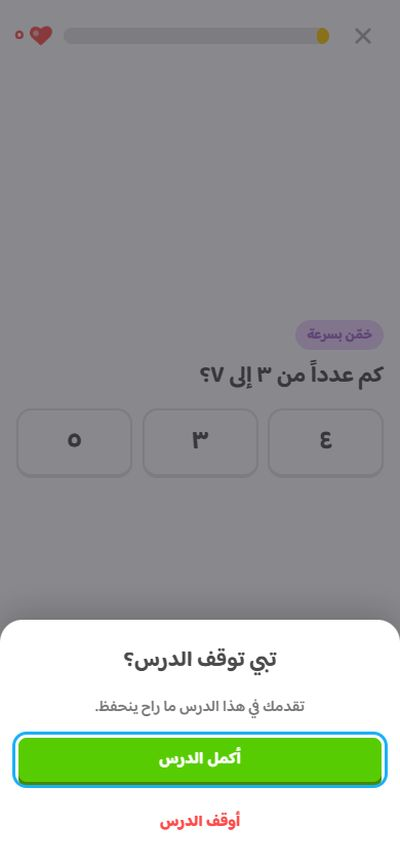
After: back asks first
2
The Android APK is months old
Not done here
NowQudrati.apk still has the June app and curriculum.
What it needs
A rebuild on your build machine. The Capacitor project isn't in this repo.
The web back-button fix in item 1 also works inside the app's web view.
3
A new student's first sounds were silent on mobile data
Before
Test on a slow network (1.6 Mbps): 0 of 11 typing clicks on فهيم's first bubble were heard.
The first missing sound downloaded all of them at once.
The Brilliant files took 2.82 MB, at 320 kbps.
After
Same test: 10 of 10 heard.
The first-run sounds are fetched while the welcome screen shows, and a missing sound loads only itself.
The files now take 0.80 MB at 128 kbps, and sound the same on a phone.
Still true in both copies: the sound of the very first tap («ابدأ الآن») can't play, because a browser only allows sound to start after that first touch.
4
A double tap on «المتابعة» skipped a first-run screen
BeforeTwo quick taps on the level question jumped straight to «يلا نلقى أفضل مكان». The daily-goal question was never asked.
AfterThe second tap is ignored while the screen slides in, and the student lands on the goal question.
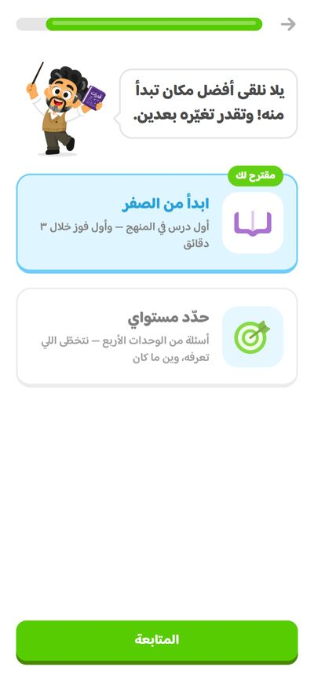
Before: goal skipped
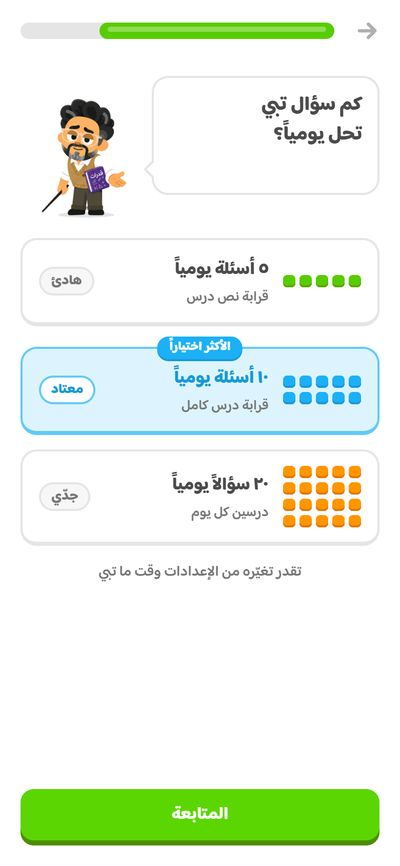
After: the goal question
5
On small phones the bottom bar hid answers
Before (320 px)
The keypad's ٠ and ⌫ were under «تحقق».
After a mistake on a write-the-rule screen, the needed tile was behind the bar.
The mock exam's number grid pushed the choices off the screen.
The 4th choice was hidden, with no sign there was more.
After
The question area ends at the bar.
The keypad shrinks a little.
The tiles scroll into view after a miss.
The mock grid is one row that scrolls sideways.
A hidden choice peeks out under a fade.
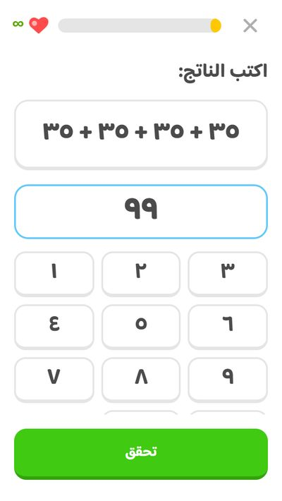
Before: ٠ ⌫ under the button
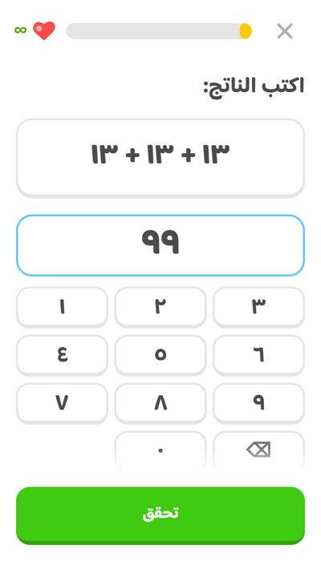
After
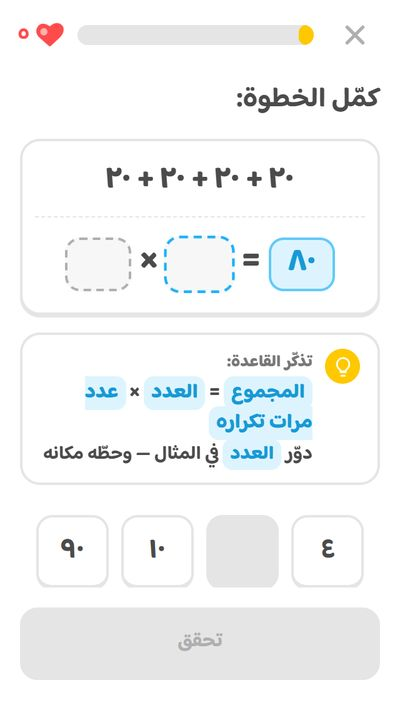
Before: tiles cut off
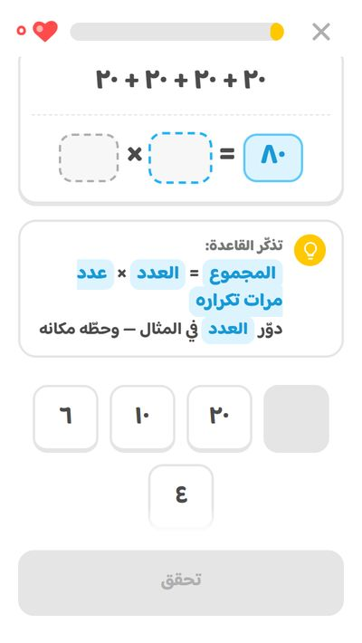
After
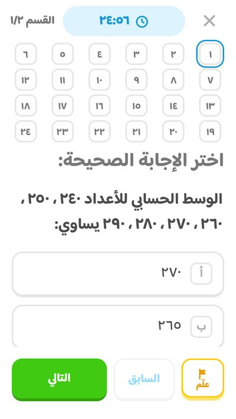
Before: choices pushed down
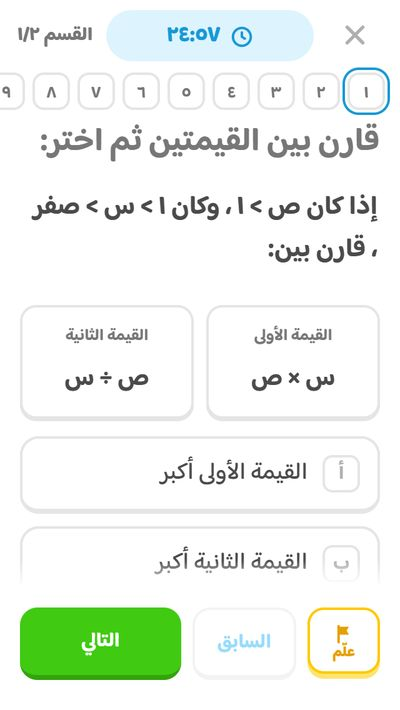
After
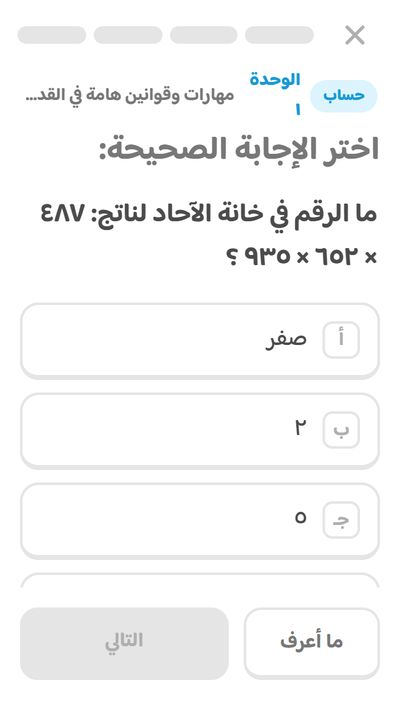
Before: no 4th choice in sight
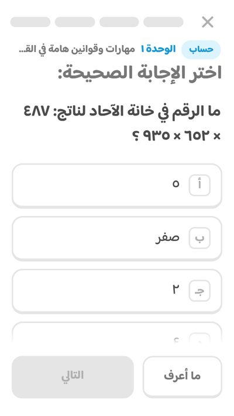
After: it peeks out
6
«اكتمل تمرين اليوم!» could drop over the first win
Checked in the code
BeforeThe banner's timer kept running when the lesson ended, so it could land on the win screen.
AfterWhen a lesson ends, the banner and its timer are cleared before the win screen draws.
The timing is too narrow to trigger in a test, and neither copy showed the banner in 3 tries. The fix is in questBannerOff().
7
Turning sound off also turned vibration off
BeforeAfter «الأصوات» was switched off, the vibration switch still showed on, but the phone stopped vibrating.
AfterVibration keeps its own setting. Sound off leaves it on, as the switch says.
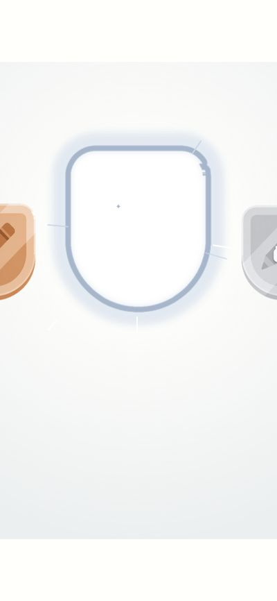
Before: shows on, doesn't vibrate
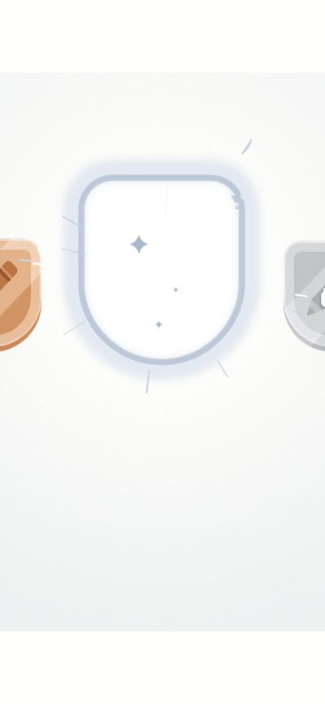
After: on and vibrates
8
The timer's last-5-seconds tick was silent
BeforeIt played about 21 dB quieter than the app's other clicks, so it was inaudible on a phone.
AfterIt is raised by 20 dB, to the level of the other clicks.
Smaller
9
Emoji on exam day
Before🎯 on the path's exam card and in the date picker, and 👇 in the «كيف أحلّها؟» sheet.
AfterA drawn target icon in both places, and the 👇 is gone.
Before: emojiAfter: drawn icon
10
Two content mistakes
Before
The triangle lesson's check «أيّ المجموعات لا تصلح أضلاعاً لمثلث؟» asked ٣ ، ٤ ، ٨, the same as the real question right after it.
Node 1, lesson 5: the "wrong" tile «آخر عدد» was also a correct answer.
After
The check now uses its own numbers: ٢ ، ٥ ، ٨ / ٤ ، ٥ ، ٧ / ٧ ، ٧ ، ١٣.
A rule's wrong tiles never include a phrase that means the same as a right one.
validate_teach passes.
11
Praise after a retried rule screen
BeforeGetting it right after a mistake showed «صحيح!» and kept the streak counting. That counting led to «ثلاث على التوالي!» and the gems for it.
AfterThe screen says «صحّحتها!». The streak resets, and the lesson bar's streak glow goes out.
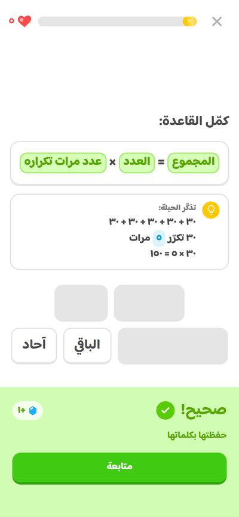
Before
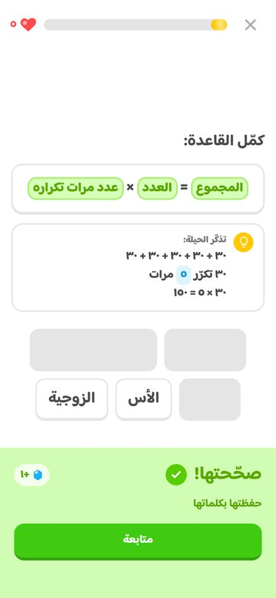
After
12
A broken save
Before
A save that no longer reads was silently replaced by a new student, and the old one was lost.
One broken answer record made every tab fail: 4 errors across stats, settings and league.
After
The unreadable save is kept aside in the phone, and a note says so.
Broken records are repaired: 0 errors.
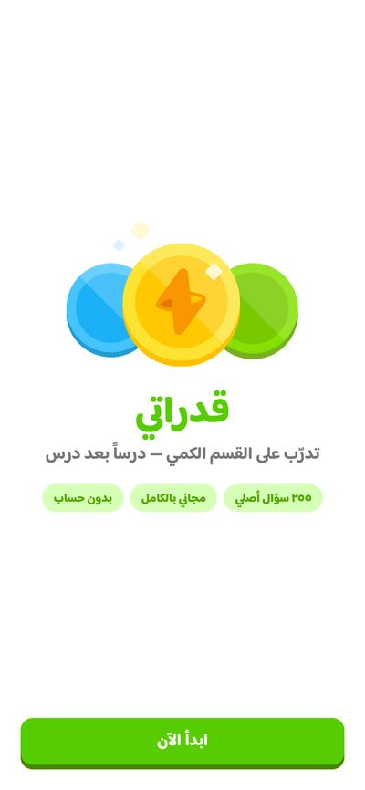
Before: silent restart
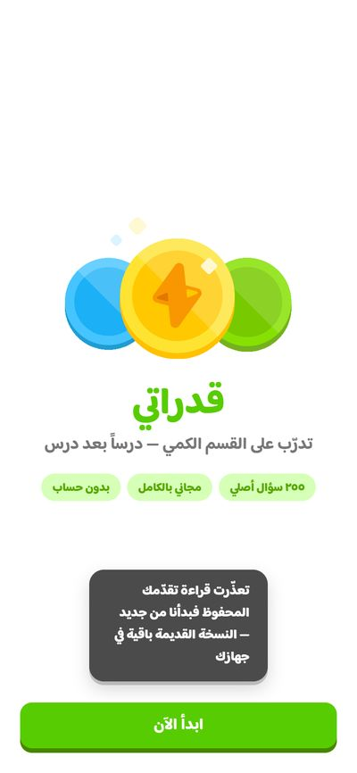
After: kept, and told
13
A streak could drop to zero after travelling west
BeforeThe test played a student whose last day counts as "tomorrow" on the phone's new clock. Their 5-day streak was saved as 0.
AfterThe streak stays at 5.
14
Time ran out on a picked answer
BeforeThe right answer was picked, then time ran out: «انتهى الوقت!», marked wrong, and a heart lost.
AfterThe picked answer is graded, as the real exam does: «ممتاز!».
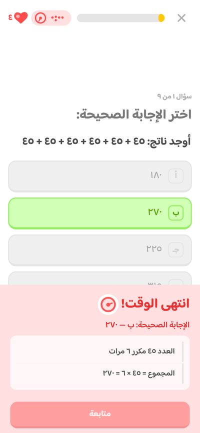
Before: thrown away
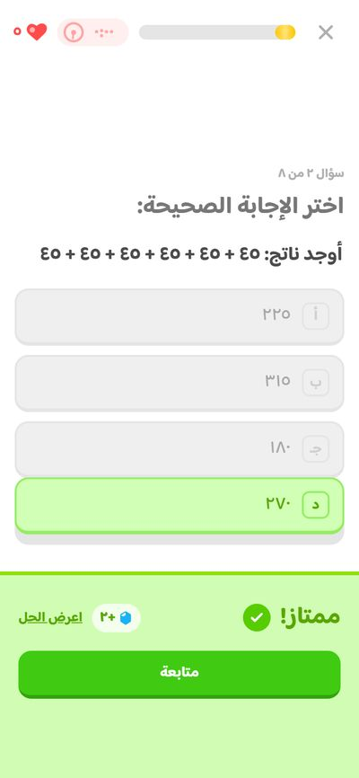
After: graded
15
Names
Before
«عبدالرحمن بن محمد العتيبي» was cut to «عبدالرحمن بن محمد ال», and the greeting read «أهلاً يا عبدالرحمن بن محمد ال!».
Editing «نورة "نونو"» in Settings showed «نورة ».
A long Latin name pushed the account page sideways.
After
Names up to 30 letters are kept, and the greeting uses the first name: «أهلاً يا عبدالرحمن!».
The quote survives editing.
A long name wraps.
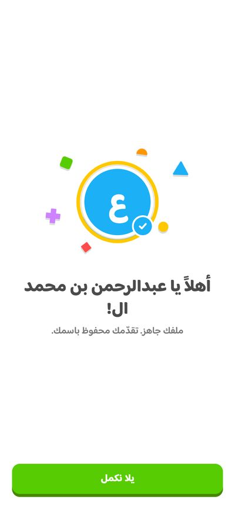
Before
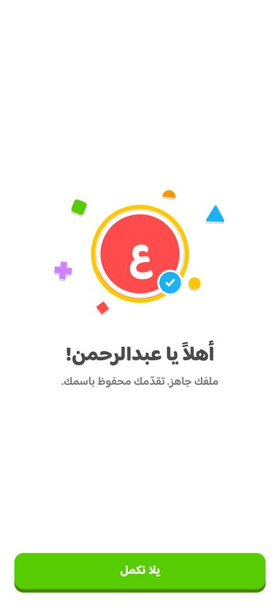
After
16
The league badge's shine never drew
BeforeThe league tab asked for /css/assets/icons/ranks/rank-silver.png, a wrong path that returned 404.
AfterNo 404s on the league tab, and the shine draws.
17
320 px phones: chips off the edge, buttons below the fold
Before
The sign-in wall's chips ran off the sides.
First-run and sign-in buttons sat below the fold.
A row of three choices was cut off.
After
The chips wrap.
The first run's button stays at the foot of the screen.
The three choices fit.
The climb, «تقدّمك اليوم» and level-test result keep their button in view.
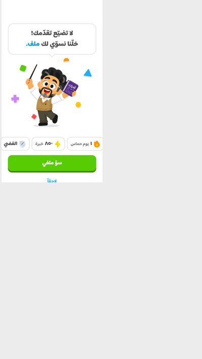
Before
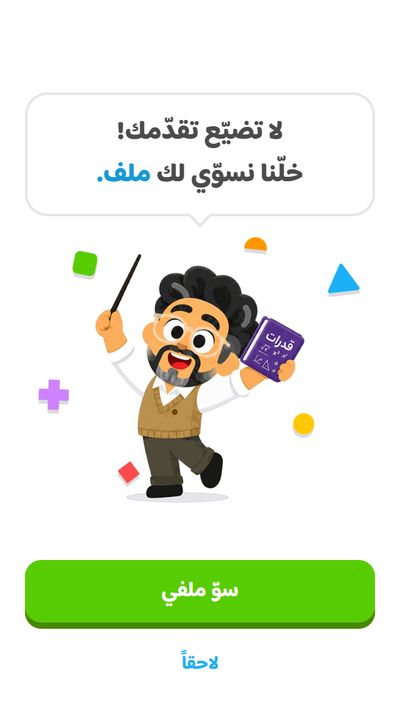
After
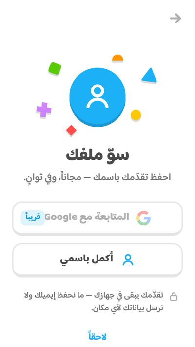
Before
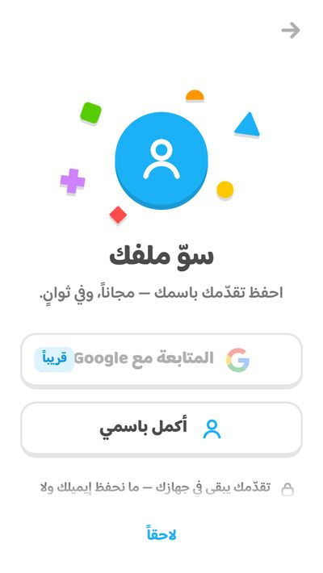
After
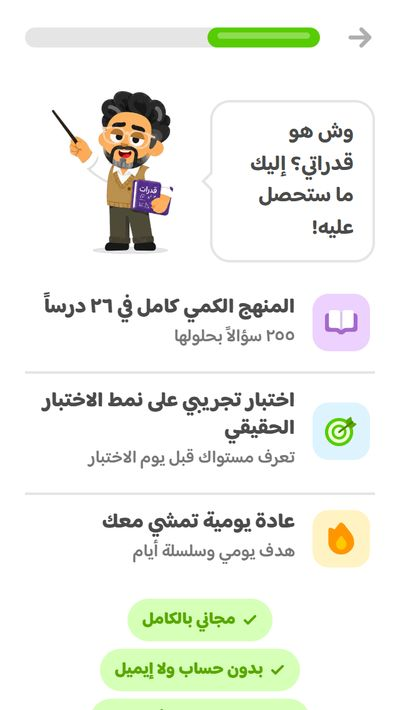
Before
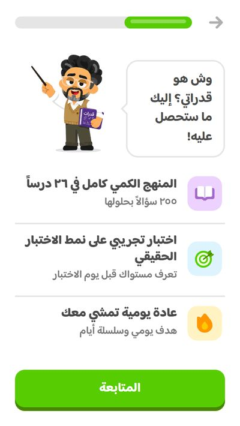
After
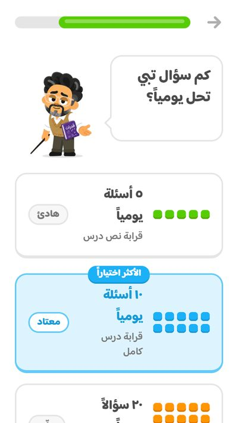
Before
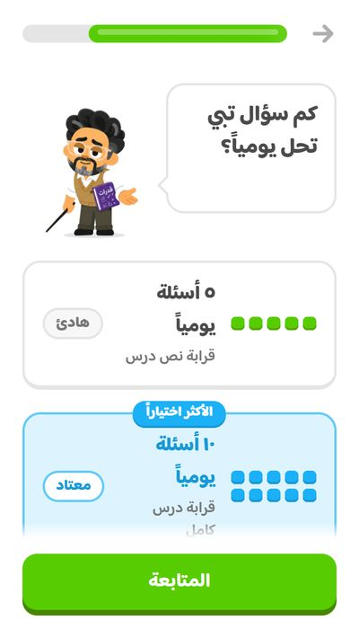
After
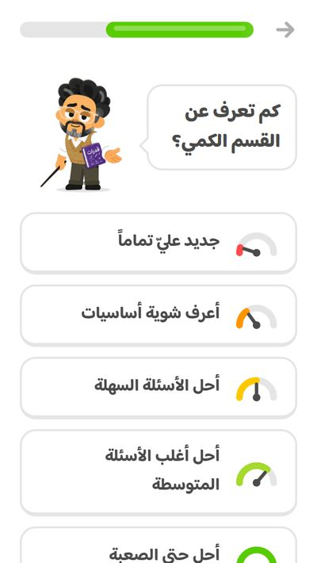
Before
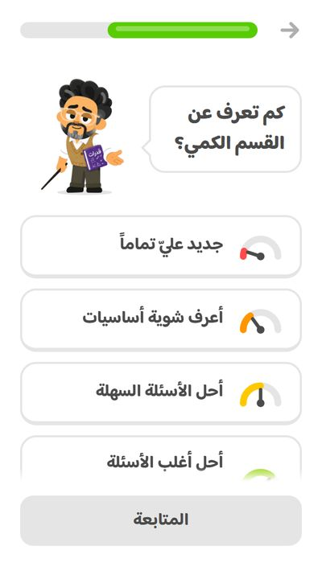
After
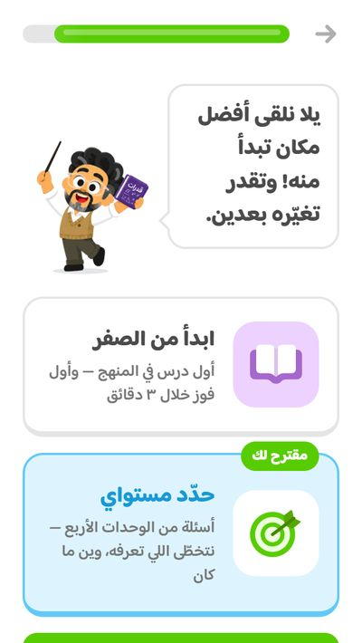
Before
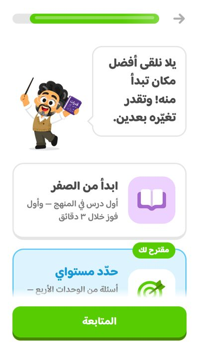
After
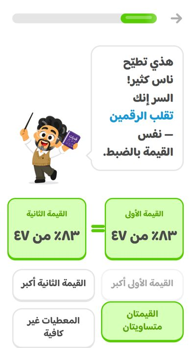
Before
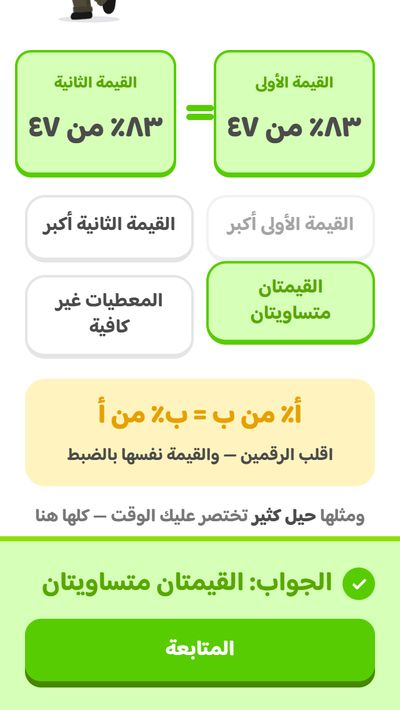
After
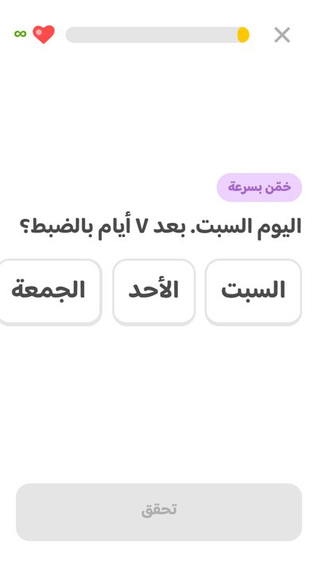
Before: «الجمعة» cut
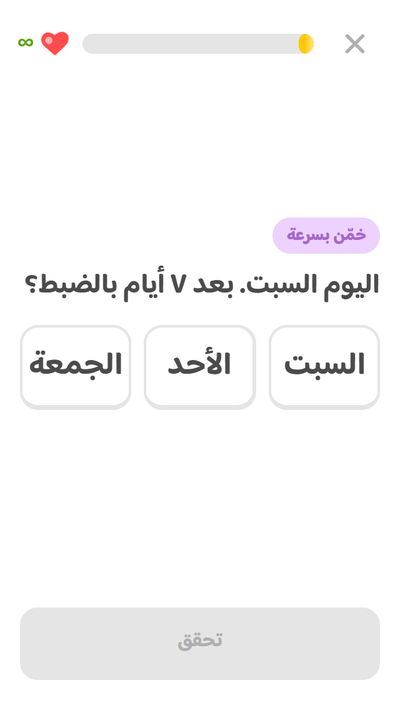
After
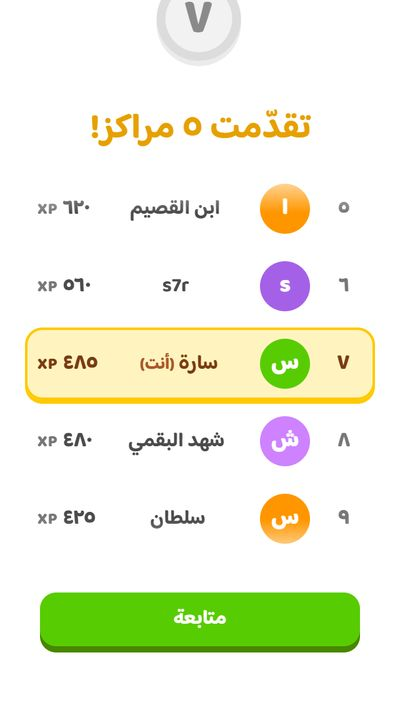
Before
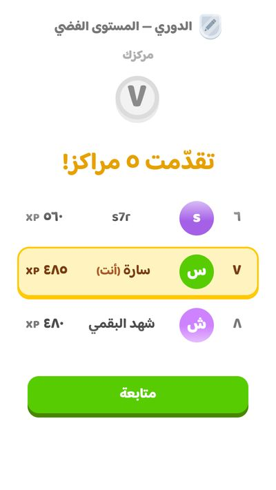
After
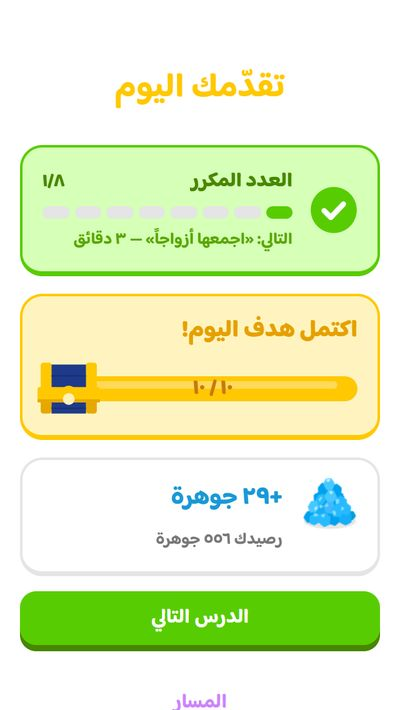
Before
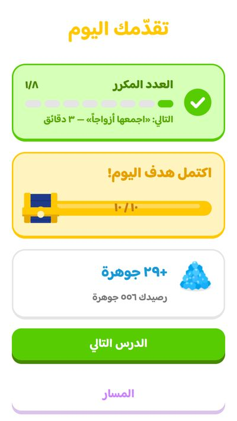
After
18
Sounds too quiet, and a climb too loud
Before
The level test's "answer taken" sound and the «جرّب» number swap were hard to hear.
A big league climb stacked 11 notes on top of each other.
After
Both are raised to the app's level.
The climb plays at most 5 notes, plus Duolingo's quiet ticks under them as before.
19
فهيم kept typing after «يلا نبدأ»
Checked in the code
BeforeA tap mid-sentence left the rest of his typing clicks playing into the first lesson.
AfterHis typing stops whenever the screen changes or a lesson starts. Long sounds still playing fade out over a quarter second.
The test tapped after his line had finished, so it found no leftover clicks in either copy.
20
«بأرقام جديدة» with the same numbers
Checked in the code
BeforeA missed item could come back at the end of the lesson with the very same numbers.
AfterThe item is regenerated until its numbers differ, up to 12 tries. Items with fixed numbers come back as they are.
21
Five small ones
Before
Once a student had reached the splash, the hello screen had no back arrow.
Back during the «جرّب» animation put «هذي تطيّح ناس كثير!…» in فهيم's hello bubble.
The climb's «متابعة» made no sound.
Settings promised a vibration on every answer, but answers never vibrated.
Reduced motion also muted the celebrations: the gold flip played nothing.
After
The back arrow is there.
The hello bubble says its own line.
«متابعة» plays Brilliant's continue sound.
A right and a wrong answer each vibrate.
Reduced motion keeps the sounds: the gold flip plays level-passed.
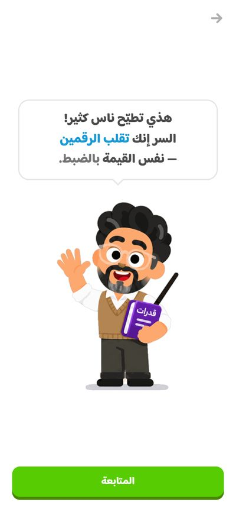
Before: wrong bubble
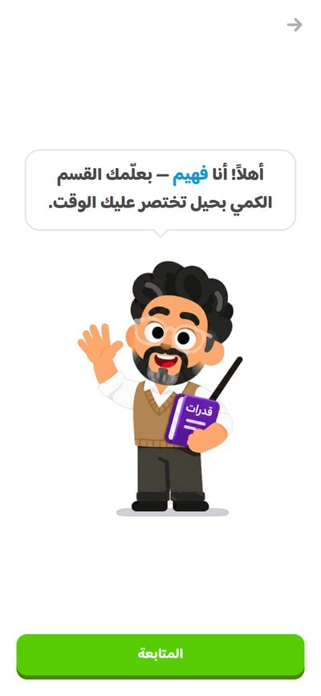
After
22
Offline after one visit
BeforeWith the network off, فهيم was an empty space beside his bubble, and the correct-answer sound was missing.
AfterHis seven pictures, both correct-answer sounds and the first run's Brilliant sounds are saved on the first visit, about 400 KB.
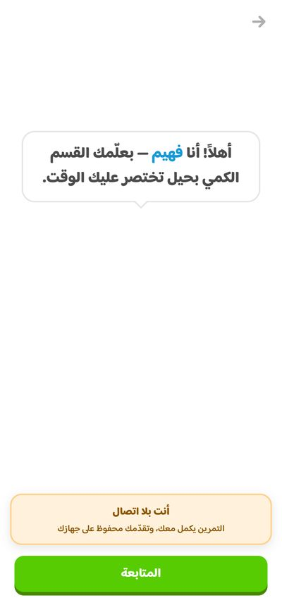
Before: no فهيم
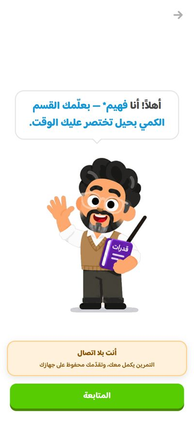
After
Caught during this check: my fix that keeps «—» from starting a line had put a stray «*» after فهيم's name on the hello screen («أنا فهيم* —»). It's fixed, and his name is blue again. I scanned 26 first-run, sign-in, lesson and result screens and found no stray «*».